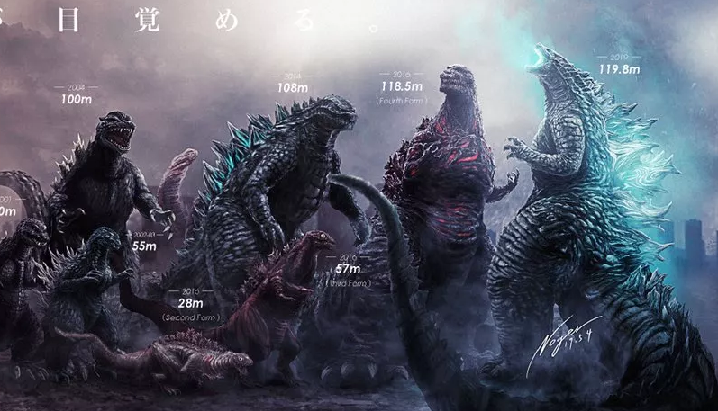

Apariencia
La apariencia de Godzilla ha cambiado ligeramente desde su aparición en
1954 hasta hoy, variando mayoritariamente en el aspecto del rostro, pero
sus rasgos más básicos y característicos permanecen. En las películas
japonesas, Godzilla es descrito como un dinosaurio gigante con una piel
rugosa, gruesa y grisácea, una cola larga y poderosa, y unas placas dorsales
similares a las del estegosaurio con forma de llamas u hojas de arce que
brillan cuando está a punto de lanzar su aliento atómico. Sus orígenes son
inciertos y varían de película en película, pero siempre resulta ser una
criatura prehistórica y sus primeras apariciones en el Tokio moderno están
relacionadas con una reacción nuclear.
Esto explica de dónde obtuvo Godzilla su enorme tamaño y sus poderes inusuales. El diseño de Godzilla está inspirado en numerosos animales, básicamente dinosaurios: su cuerpo asemeja el cuerpo de un tiranosaurio, aunque erguido (la presunta postura con la que se lo conocía antiguamente) -también se inspira en los gorilas-, sus brazos largos y gruesos se inspiran en el iguanodonte, las placas dorsales en un estegosaurio, y tiene la cola de un saurópodo.
